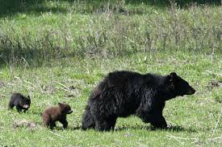
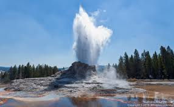
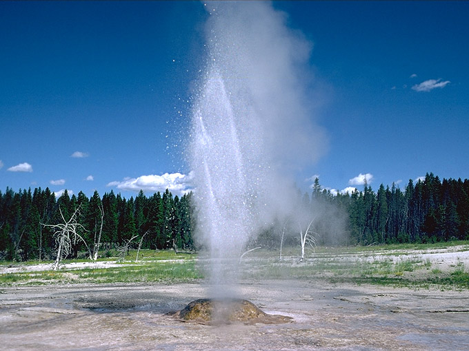
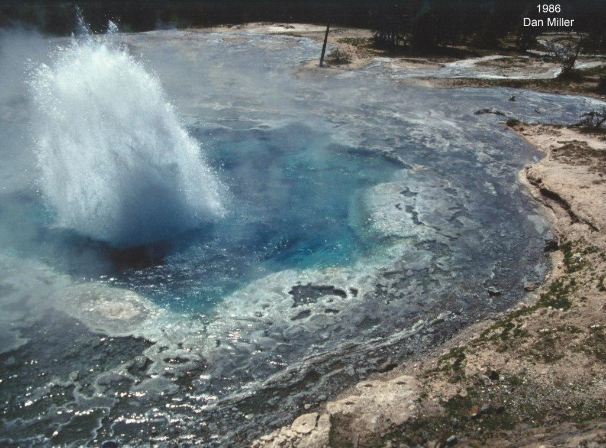

Yellowstone National Park is home to many different wildlife species as well as extrravagant gysers. Yellowstone is very known and popular for these things. Depending at what time you come to visit Yellowstone will determine what wildlife you will see. Since Yellowstone is home to many different species of wildlife, some animals will not come out until the winter. Those animals are more commonly seen in that season, like the animals that come out in the summer are more common at that season than in the winter. Early in the morning and evening are when the animals tend to be eating, so those hours are more common to see the animals. Luck and coincidence is also how you will be able to spot the animals. Yellowstone does not keep the animals bound, so they come out when they want and they roam freely, therefore, luck is one way you will get to see ceratain animals.
Wildlife animals at Yellowstone, especially females with young, are extremely dangerous. Learn about the variety of wildlife here. Yellowstone asks that you keep a safe distance from all wildlife. Each year there are multiple park visitors that get injured by wildlife by getting to close to the animals. If you approach bears or wolves on foot within 100 yards (91m), or 25 yars (23m) of any other wildlife is strictly prohibited for your safety. PLEASE use the roadside pullouts when viewing wildlife. Use binoculars for safe viewing and to avoid disturbing the wildlife. If you cause the animal to move, you are too close!! It is illegal to willfully remain near or approach wildlife, including birds, within ANY distance that disturbs or displaces the animal. Click here for facts about the wildlife at Yellowstone.
The Geysers at Yellowstone are a very extravagant deature and a tourist attraction for multiple people. It is a product of millions of years of geology at work. Yellowstone sits inside an ancient volcanic caldera which is the exploded crater of a volcano. The last major eruption from this was 600,000 years ago. For hundreds of thosands of years, lava flowed, slowly filling in most of the caldera. To this day at yellowstone, molten rock resides as little as 2-5 miles below the surface in certain places. Heat from the volcanic activity is present by heating the ground water and creating the thermal features. The four types that are present in the park include, geysers, hot springs, fumaroles, and mudpots.
The geysers at Yellowstone erupt periodically. The eruptions are the results of super heated water below ground that becomes trapped in channels leading to the surface. The hottest temperatures are at the bottom of this channel. Since the water cannot vaporize down there, steam is sent upwards in bubbles, collecting in the channels tight spots until they essentially become clogged. This causes the confined bubbles lifting the bubbles above to cause the geyser to overflow. The pressure decreases until violent boiling occurs, producing a tremendous volume of steam which forces the water out of the vent in a superheated mass. This is called an eruption and as it continues, the heat and pressure gradually decrease and the eruption will stop when the water reservoir is depleted or the steam runs out.
There are two types of geysers at Yellowstone. There is the fountain geysers that shoot water out in various directions through a pool. The other geyser is called a cone geyser, which shoots water out in fairly narrow jets, usually in a cone-like formation.
Cone Geyser
Fountain Geyser
The site where this information was found..